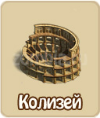

Получено: файл; исходный URL. Первая иллюстрация строки каталога; авторство не подтверждено. Идентичность изображения при замене домена не проверена. Страница: источник.

Колизей
браузерная версия; платформа и дата редакции не установлены- Тип
- Постройка
- Версия и дата
- браузерная версия; платформа и дата редакции не установлены
Данные по источнику · браузерная версия; платформа не установлена · дата редакции списка не установлена
Предварительно: Прочитан список. Имена файлов пиктограмм приводятся как есть: они не гарантируют идентификацию материала. Alt-атрибуты источника содержат ошибки. Отдельная статья и дата не проверены.. Требуется сверка.
- Сведения из списка, включая имена файлов пиктограмм
- [рисунок: kolizey.png] Доступна на: 51 ур Стоимость: 1 000 000 Стадии строительства: 1. 100 [рисунок: vremya1.jpg] + 005 [рисунок: kuvalda.png] + 30 [рисунок: Kaplya_vody.png] 2. 120 [рисунок: vremya1.jpg] + 012 [рисунок: kuvalda.png] + 25 [рисунок: Snegok.png] 3. 150 [рисунок: vremya1.jpg] + 015 [рисунок: kuvalda.png] + 03 [рисунок: gazeti.png] Создает: 3 проволока+30 пряник=1 снежное дерево 5 стекло+70 пряник=1 хижина 1 желтая краска+10 пряник=1 малый светильник 3 желтая краска+25 пряник=1 большой светильник
Данные по источнику · браузерная игра; платформа страницы не уточнена · 11.01.2014 — публикация; редакция неизвестна
Предварительно: Прочитана конкретная строка; старые сведения, у источника встречаются опечатки. Возможны заимствования, независимость от других сайтов не доказана.. Требуется сверка.
- Стадии по Zommbie
- 1: 100 времени + 5 кувалд + 30 капель воды; 2: 120 времени + 12 кувалд + 25 снежков; 3: 150 времени + 15 кувалд + 3 газеты.
- Возможности и рецепты по Zommbie
- Снежное дерево = 3 проволоки + 30 пряников; хижина = 5 стекла + 70 пряников; малый светильник = жёлтая краска + 10 пряников; большой светильник = 3 жёлтых краски = 25 пряников (в источнике знак равенства, требует сверки).
Данные по источнику · историческая браузерная игра, площадка не указана · 05.05.2012 — дата публикации; дата редакции неизвестна
Предварительно: Сопоставлено по единственному точному названию; различные версии или одноимённые объекты могут различаться. Названия файлов и alt пиктограмм сохранены как подписи, не заменяют проверенную расшифровку; изображения и цены требуют ручной сверки. Независимость от zombi-ferma.ru и других сайтов не установлена.. Требуется сверка.
- Текст и пиктограммы источника
- [изображение: m_colizeum.png] Доступна на: 51 ур Стоимость: 1 000 000 Стадии строительства: 1. 100 [изображение: koliz1.png] +005 [изображение: koliz2.png] +30 [изображение: koliz3.png] 2. 120 [изображение: koliz1.png] +012 [изображение: koliz2.png] +25 [изображение: koliz_4.png] 3. 150 [изображение: koliz1.png] +015 [изображение: koliz2.png] +03 [изображение: koliz5.png] Создает: 3 проволока+30 пряник=1 снежное дерево 5 стекло+70 пряник=1 хижина 1 желтая краска+10 пряник=1 малый светильник 3 желтая краска+25 пряник=1 большой светильник
Связанные сущности
нет проверенных связей — требуется сверка.